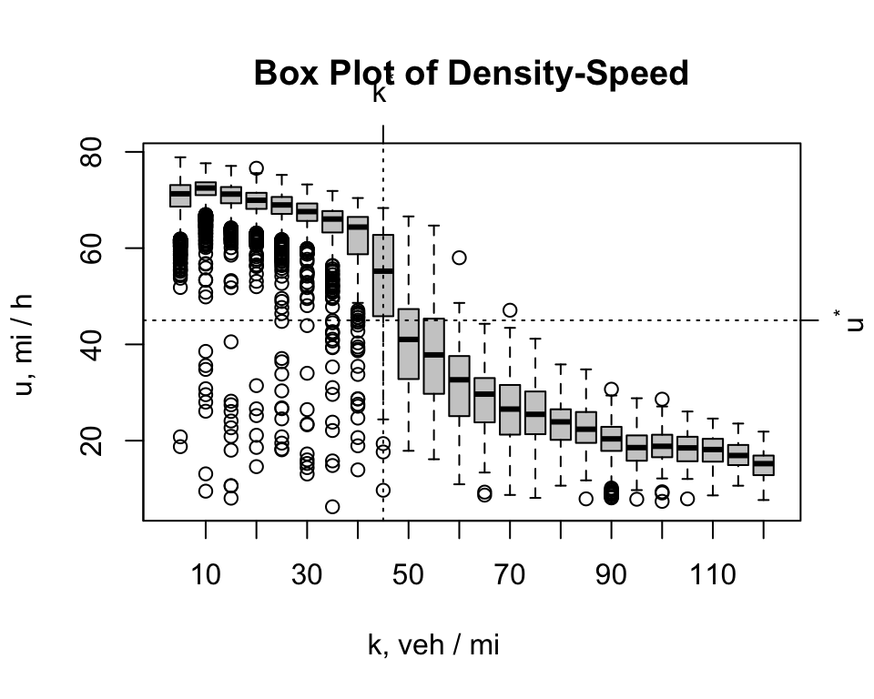
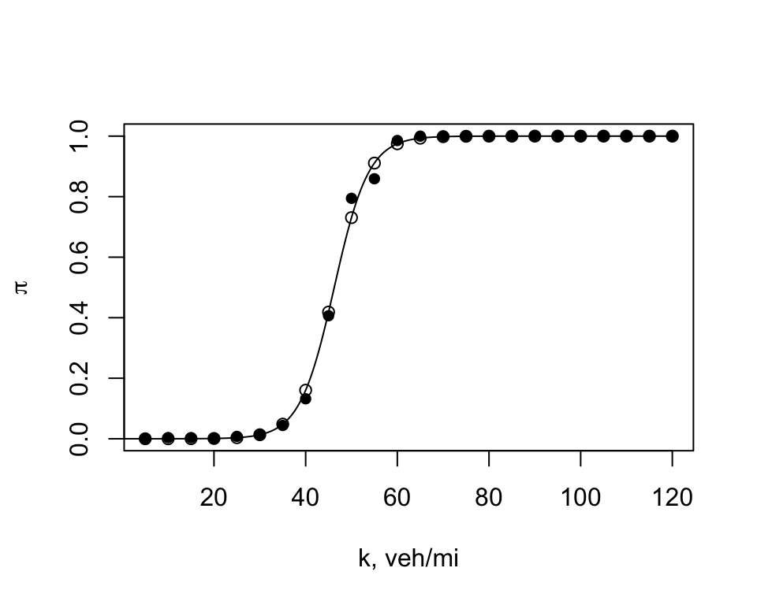
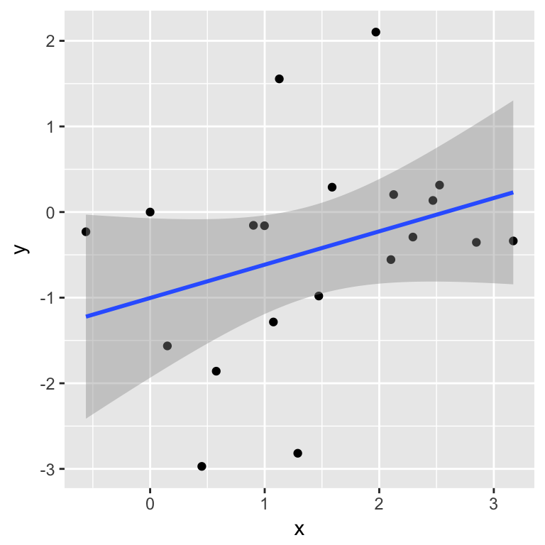

TestSite
Scatter Plot of Bottleneck Data

Density-Speed Box Plot

Logistic Regression Model

## Deviance = 7.114999 Iterations - 1
## Deviance = 3.272687 Iterations - 2
## Deviance = 1.336828 Iterations - 3
## Deviance = 0.4534336 Iterations - 4
## Deviance = 0.1680281 Iterations - 5
## Deviance = 0.1261129 Iterations - 6
## Deviance = 0.1249035 Iterations - 7
## Deviance = 0.1249023 Iterations - 8
## Deviance = 0.1249023 Iterations - 9Time-Distance Diagrams on a Ring Road
| Scenario | \(\bar{h}\), seconds | \(\hat{\sigma}_h\), seconds | \(\hat{Q}\), vehicles per hour (vph) |
|---|---|---|---|
| Free-Flow | 1.68 | 0.59 | 2137 |
| Congested-Flow | 1.76 | 1.46 | 2045 |
Stationary Time-Series Model of Speed
## Min. 1st Qu. Median Mean 3rd Qu. Max.
## 68.12 69.46 70.10 70.12 71.02 72.04## Min. 1st Qu. Median Mean 3rd Qu. Max.
## 32.42 37.38 40.11 41.50 45.03 54.92Car-Following and Merging Models
Flow-Speed Plot
## Warning: Removed 6750 rows containing missing values (geom_point).Car-Following and Breakdown
Stopping at Signal
Explaining Breakdown
Brownian Motion Plots (Trip Dispersion)
